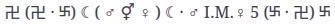

Mon 19 March 2018
Words
This.
Ancient sigil.. Both I.M. and K.M.
Equilibrate the mandala mirroring it, and also mirror each of the beings in the mandala..
Reduct like in the roleplaying, the power of powerful beings (QQ), and also create antidotes for each of the roots which sustain/strong them. Do this with art and science.

A Wind that Blows
(K.M. ☘ L.U.C.K.Y. ( . )( . ) ☘ I.M.)
Maybe more like a pear, juicy.
Oh the lion
GRACE
A spiderweb
hexagram
the spiderweb itself
(already inside it)
ARTS
ssomethin someothin
impressionit
cheapgood stuff
somethin; maybe locki
HORSE
something nothin and he is everywhere fuckin everybody, lol
more
Always link everything.
A Dança dos Espíritos [pdf, book, portuguese]